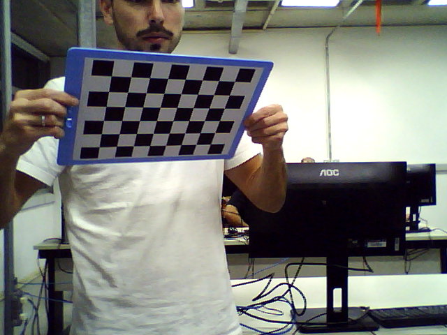
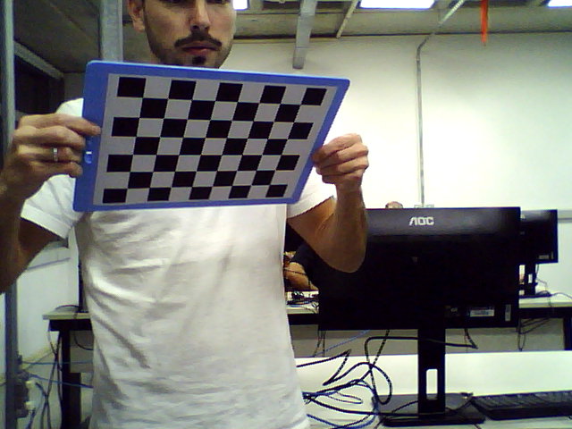

Introdução
A estereoscopia é uma técnica fundamental na reconstrução tridimensional de cenas a partir de imagens obtidas por câmeras posicionadas em diferentes pontos de vista. Com base na geometria epipolar, é possível estabelecer correspondência entre pontos de duas imagens e inferir a profundidade relativa dos objetos na cena. Este experimento visa proporcionar uma compreensão prática e teórica dos conceitos de visão estéreo e calibração de câmeras, por meio da construção de um sistema de captura 3D utilizando duas webcams.
A atividade envolve o estudo prévio dos fundamentos da estereoscopia, a montagem de um sistema de câmera estéreo, a execução de algoritmos de calibração e reconstrução 3D com uso da biblioteca OpenCV, e a produção de um vídeo anáglifo tridimensional. Ao final do experimento, espera-se que os alunos compreendam a importância da calibração, dos parâmetros intrínsecos e extrínsecos da câmera, e dos desafios da percepção visual em sistemas computacionais de visão.
Procedimentos experimentais
Parte 2
Seguindo as instruções do tutorial indicado, duas webcams idênticas foram montadas paralelamente sobre uma superfície firme, com aproximadamente 5 cm de distância entre seus eixos ópticos. As câmeras foram fixadas para garantir que não houvesse deslocamento relativo durante os testes e calibrações. Todos os detalhes do processo de montagem, incluindo alinhamento, distância e fixação, estão disponíveis no site https://learnopencv.com/making-a-low-cost-stereo-camera-using-opencv/.
Parte 3
Os códigos disponibilizados no repositório do projeto foram utilizados inicialmente com imagens de exemplo para entender o processo de calibração e reconstrução 3D.
Esses códigos estão disponíveis para download em https://github.com/spmallick/learnopencv/tree/master/stereo-camera e devem ser compilados conforme instruções no site.
As webcams montadas foram utilizadas para capturar entre 10 e 15 imagens de um padrão de calibração (tabuleiro xadrez). O código foi modificado para processar essas imagens e gerar os parâmetros de calibração salvos em arquivos XML.
Após a calibração, foi implementada a visualização em tempo real da cena 3D e a gravação de um vídeo anáglifo com duração entre 10 e 20 segundos. O vídeo foi convertido para o formato MP4.
Os parâmetros da calibração foram apresentados em forma de matrizes e vetores. A equipe analisou os valores obtidos, a qualidade da visualização ao vivo e do vídeo gravado, além de relatar percepções individuais em relação à profundidade e realismo das imagens estereoscópicas.
Análise e discussão dos estudos realizados
Parte 3 - B
Responda: consulte a teoria da calibração e correção de distorção e o exemplo executado, e com isso descreva todos os parametros necessários para a camera estéreo.
Os parâmetros necessários para a câmera estéreo, de acordo com a teoria da calibração e correção de distorção e com base no exemplo executado, são: as matrizes intrínsecas de cada câmera (mtxL e mtxR), que definem a distância focal e o centro óptico; os vetores de distorção (distL e distR), responsáveis por corrigir imperfeições ópticas da lente; a matriz de rotação (Rot) e o vetor de translação (Trns), que definem a relação espacial entre as duas câmeras; a matriz essencial (Emat) e a matriz fundamental (Fmat), utilizadas na geometria epipolar para correspondência de pontos; as matrizes de retificação (rect_l e rect_r) e de projeção (proj_mat_l e proj_mat_r), que alinham as imagens nos mesmos planos; e a matriz de disparidade (Q), usada para estimar profundidade. Além disso, os mapas de retificação (Left_Stereo_Map_x/y e Right_Stereo_Map_x/y) são essenciais para corrigir e alinhar as imagens capturadas, sendo estes os únicos parâmetros efetivamente salvos no arquivo XML.
Parte 3 - C
Programa modificado para obter fotos de calibração: capture_images.py
Fotos tiradas (SteroL):

Fotos tiradas (SteroR):
 

Programa modificado para apresentar as imagens da câmera estéreo ao vivo: movie3d_abc.py
Responda: liste todos os parâmetros e valores obtidos para sua câmera estéreo, colocando-os nas formas de matrizes e vetores. Quais destes parâmetros forma salvos no arquivo de parâmetros de calibração (xml)?
Durante a calibração da câmera estéreo, foram obtidas as matrizes intrínsecas (mtxL, mtxR), os vetores de distorção (distL, distR), a matriz de rotação (Rot), o vetor de translação (Trns), a matriz essencial (Emat), a matriz fundamental (Fmat), as matrizes de retificação e projeção (rect_l, rect_r, proj_mat_l, proj_mat_r) e a matriz de disparidade (Q).
Os únicos parâmetros salvos no arquivo params_py.xml foram os mapas de retificação Left_Stereo_Map_x, Left_Stereo_Map_y, Right_Stereo_Map_x e Right_Stereo_Map_y, que são utilizados para corrigir a distorção das imagens e alinhá-las corretamente para visualização 3D
Parte 3 - D
Programa modificado para realizar a gravação de um video 3D para anaglifo: movie3d.py
Video gravado:
Download do video (caso não esteja rodando): video3d_resultado_lab_v1.mp4. Caso não funcione mesmo assim, pode ser localizado na pasta do código fonte desse laboratório.
Responda: a percepção individual de todos integrantes da equipe. Compare e analise as diferenças com os resultados ao vivo e gravado.
Não foram percebidas diferenças significativas nos vídeos formados, ambos não apresentaram o comportamente esperado adequadamente, possivelmente devido a problemas na etapa de calibração.
Conclusões
O experimento permitiu a compreensão prática dos conceitos de estereoscopia e geometria epipolar, fundamentais para sistemas de visão computacional 3D. A montagem de uma câmera estéreo com duas webcams, associada à calibração precisa por meio de padrões de tabuleiro e uso da biblioteca OpenCV, demonstrou a importância da obtenção correta dos parâmetros intrínsecos e extrínsecos para a reconstrução da profundidade de uma cena.
A geração e visualização de imagens 3D, tanto ao vivo quanto em vídeo gravado, possibilitou aos integrantes da equipe uma percepção concreta da aplicação dos modelos teóricos estudados. Observou-se que pequenas imprecisões no alinhamento das câmeras ou na captura das imagens de calibração afetam diretamente a qualidade da visualização 3D, o que reforça a necessidade de rigor nos procedimentos experimentais.
Além disso, a comparação entre as imagens geradas ao vivo e os vídeos anáglifos mostrou diferenças sutis na percepção de profundidade, destacando os limites da técnica e a sensibilidade da experiência visual individual. O experimento contribuiu para consolidar os conhecimentos sobre visão estéreo e demonstrou a viabilidade de implementar soluções de reconstrução 3D com baixo custo e boa precisão, sendo uma base sólida para estudos mais avançados em Visão Computacional.
Referências consultadas e indicadas
Materiais disponibilizados pelo professor.